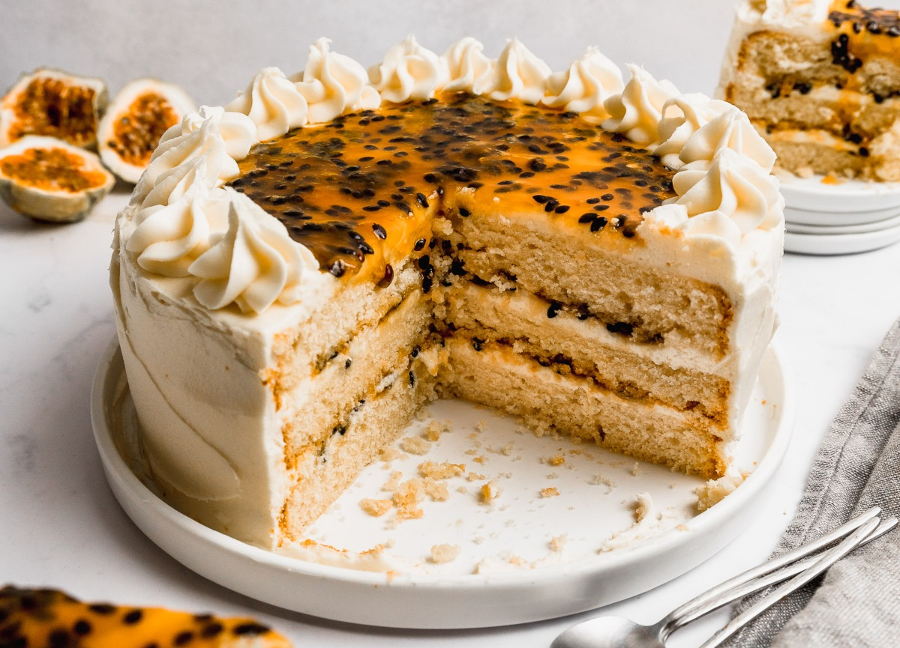

La mejor torta tropical que puede existir.
Mil Sabores
Aprende paso a paso cómo lograr un bizcocho esponjoso y un relleno fenomenal con esta receta infalible, ideal para celebrar cualquier ocasión especial.
Ingredientes bizcocho:
- 270 g de mantequilla sin sal a temperatura ambiente
- 75 g de aceite de canola o vegetal
- 740 g de azúcar blanca
- 6 huevos
- 210 ml de jugo de maracuyá
- 150 ml de leche de cualquier tipo
- 3 cdtas de sal
- 3 cdtas Polvos de Hornear Gourmet
- 600 g de harina sin polvos de hornear
Ingredientes relleno:
- 500g de pulpa de maracuyá
- 100 g de azúcar
Preparación bizcocho:
Paso 1 : Batir la mantequilla con el azúcar y aceite hasta que se haya aclarado la mezcla.
Paso 2 : Agregar los huevos y batir nuevamente hasta incorporarlos bien y que se vea aireado.
Paso 3 : Agregar la leche y jugo de maracuyá y mezclar. Se puede ver como que estuviera cortado, pero con la harina regresa a la normalidad.
Paso 4 : Agregar la harina, Polvos de Hornear, sal y mezclar.
Paso 5 : Preparar 2 moldes de 25 cm de diámetro aceitando el molde y poniendo papel para hornear en la base, cortado al tamaño preciso.
Paso 6 : Poner 2/3 de la mezcla adentro de un molde y el resto en el otro.
Paso 7 : Hornear por separado en un horno precalentado a 180°C por 40 min-1 hora en el caso del molde con más masa y 30 min el de menos masa.
Paso 8 : Desmoldar una vez que se hayan enfriado por completo.
Paso 9 : Con un cuchillo de panadería grande, nivelar las tortas, retirando la cúpula.
Paso 10 : La torta grande se corta en 2, para tener en total 3 capas de torta.
Preparación relleno:
Paso 1 : Cocinar la pulpa y azúcar a fuego medio-alto hasta que solo quede la mitad del volumen original.
Paso 2 : Dejar que se enfríen por completo antes de usarla.
Preparación frossting:
Paso 1 : Batir la mantequilla usando una batidora eléctrica por 5 minutos.
Paso 2 : Agregar el queso crema y repetir el proceso.
Paso 3 : Agregar el azúcar usando un colador para cernirla y batir hasta que se haya incorporado.
Paso 4 : Poner la primera capa de torta sobre el plato donde se servirá.
Paso 5 : Poner un poco de buttercream encima y esparcirlo.
Paso 6 : Crear una pequeña forma de piscina en el centro y ahí esparcir ¼ de la salsa de maracuyá.
Paso 7 : Encima poner la siguiente capa de torta y repetir el proceso. Terminar con la tercera capa de torta.
Paso 8 : Esparcir buttercream con una espátula todo alrededor de la torta y en la parte superior. Con lo que sobre puedes hacer ecoraciones adicionales.
Paso 9 : Poner lo que queda de salsa de maracuyá sobre la torta.
Paso 10 : Refrigerar un par de horas antes de cortarla para que no se desarme.